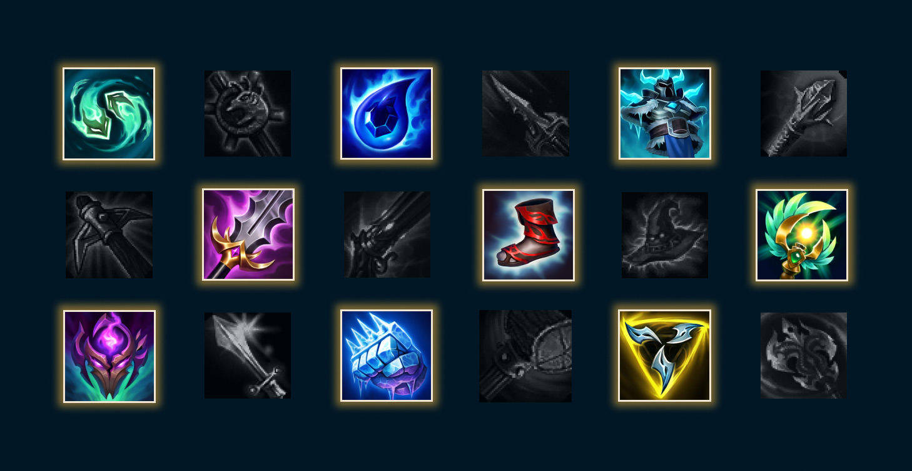
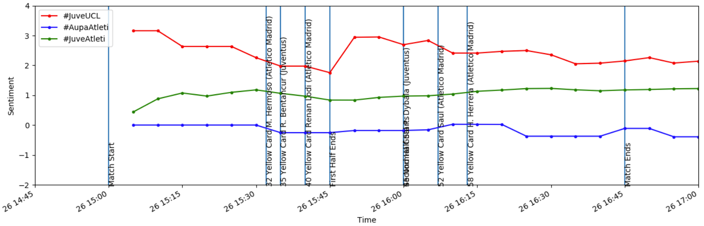

Abdullah Basulaib
Toronto, ON
I'm a York University graduate with a Bachelors of Science in Computer Science. I have a passion for programming, designing and developing software. My favourite courses are databases, data mining, big data systems, algorithm design and advanced data structures. I know the list is a lot but I do love them all. 😄
I like music, food and video games. In my spare time, I love to research about new things or play some games after a long day. One of my dreams is having my own TED Talk. I like to lead and express my thoughts. I'm also a big fan of team-oriented environments, because I believe it brings out the passion and competition to work even harder.
I'm currently looking for full-time opportunities in Toronto and the GTA. Feel free to email me for anything, even if you just wanna say hi.
Skills
Python (Flask)
Java
SQL
Git
Docker
AWS
HTML
CSS
Javascript
Unix
Projects
TEKKEN 7 Data Index

Flask, Javascript, MySQL
Online hub for information for the fighting game, TEKKEN 7
LOL Online Sandbox
Flask, Javascript, MySQL
Online sandbox to theorize, test and experiment champions, items, runes and masteries for the popular MOBA, League of Legends
Soccer Fan Sentiment via Twitter
Python, Numpy, Pandas, Twitter API
Analyzes fan sentiment throughout the game time via tweets by fans
ANTLR4 to Alloy Compiler
ANTLR4, Java, MIT Alloy Analyzer
A compiler that translates regular languages to Alloy (MIT) syntax for proof correctness